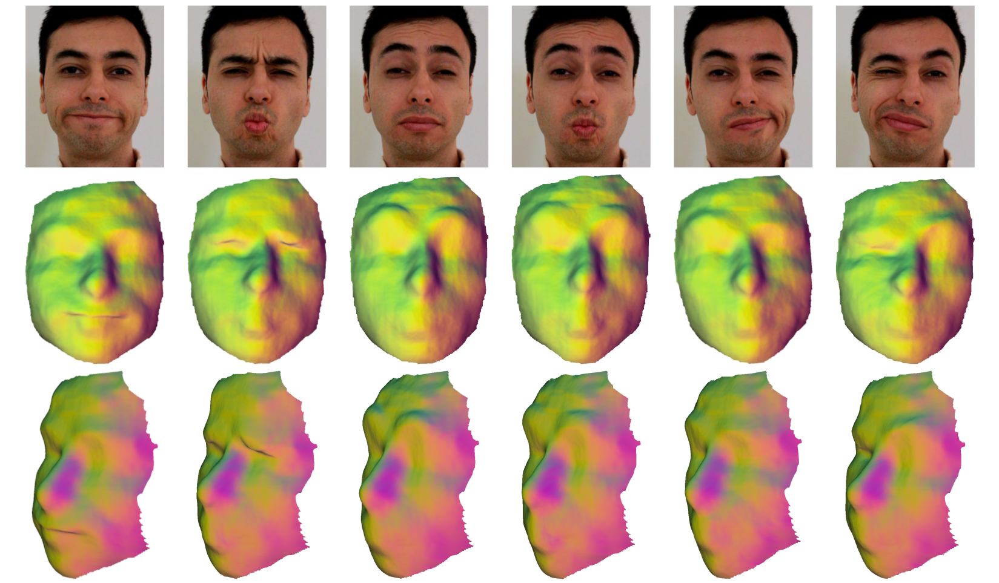

ICCV 2015
Direct, Dense, and Deformable: Template-Based Non-Rigid 3D Reconstruction from RGB Video

Abstract
In this paper we tackle the problem of capturing the dense, detailed 3D geometry of generic, complex non-rigid meshes using a single RGB-only commodity video camera and a direct approach. While robust and even real-time solutions exist to this problem if the observed scene is static, for non-rigid dense shape capture current systems are typically restricted to the use of complex multi-camera rigs, take advantage of the additional depth channel available in RGB-D cameras, or deal with specific shapes such as faces or planar surfaces. In contrast, our method makes use of a single RGB video as input; it can capture the deformations of generic shapes; and the depth estimation is dense, per-pixel and direct. We first compute a dense 3D template of the shape of the object, using a short rigid sequence, and subsequently perform online reconstruction of the non-rigid mesh as it evolves over time. Our energy optimization approach minimizes a robust photometric cost that simultaneously estimates the temporal correspondences and 3D deformations with respect to the template mesh. In our experimental evaluation we show a range of qualitative results on novel datasets; we compare against an existing method that requires multi-frame optical flow; and perform a quantitative evaluation against other template-based approaches on a ground truth dataset.